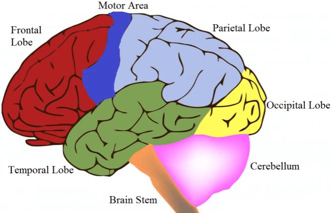
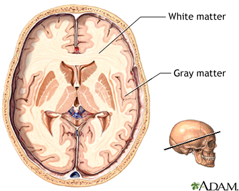

Children ages one to three are generally affected with Cortical Visual Impairment (CVI). My sister Sarah suffers from CVI after coming out of a coma at two weeks old.
CVI originates in the occipital lobe (back part of the brain) and not the eye. A child with CVI has all parts of his/her eyes including the retina in perfect condition, both anatomically and physiologically. When the retina converts light-based images into nerve signals, the nerve signals reach their final destination-the occipital cortex or the visual cortex after passing through six specific nerve centers. The unmyelinated neurons in the 2-4 mm thick part of the occipital cortex are the nerve centers that interpret the nerve signals (coming from the retina) as vision. In children with CVI, the nerve signals reaching the visual cortex are not translated as vision because the neurons in the visual cortex are dead, resulting from very low blood glucose levels (hypoglycemia) or very low oxygen (hypoxia) or by traumatic injury.
Children with CVI rarely have eye contact with an object or person because they don’t see anything. They are not able to visually fixate and their response to stimulation such as light may be poor. Since the occipital cortex is impaired, children with CVI cannot perceive the world around them.
Cortical Visual Impairment (CVI) is caused by damage to the gray matter, white matter or both in the occipital cortex. In my sister's case, it was caused by low oxygen (hypoxia) and low blood glucose (hypoglycemia) at birth that went unnoticed for two weeks that damaged her occipital cortex.
The components of vision such as color, movement, and dimensions are processed in different parts of the brain, connecting and making a meaningful perception of vision. Color, movement, and dimensions do not merge meaningfully in children with CVI so they don’t really understand what they “see”. CVI can be noticed by a simple observation such as when a child does not visually follow an object moved in front of his/her eyes. A brain scan showing ischemia of the cerebral cortex (visual cortex) is a clear indication of damage in the visual cortex indicating the possibility of CVI. Further clarification of CVI can be done by a Vision Evoke Response Test (VERT) by a specialized ophthalmologist. During the VERT, electrodes are planted at different locations on the head and exposed to flashes of light. Responses are reflected on graphs.
There is no medicine or surgery for CVI. Regular vision therapy using special apps can stimulate the eye and send more signals to the visual cortex that can stimulate the living neurons in the visual cortex. Vision therapy has to be administered on a regular basis every day for an hour. Constant stimulation of the visual cortex through vision therapy is believed to activate new neuronal circuits in the visual cortex that may improve vision. Improvement of vision through vision therapy can be verified by a Vision Evoke Response Test (VERT). During VERT, the response of the neurons in the occipital (visual) cortex is recorded as graphs. If the graphs have lows and highs, that shows the nerves in the occipital cortex are responding to the light. Flat graphs in a VERT indicate no response to light in the visual (occipital) cortex confirming CVI.
Feelif is a tablet made for people with CVI. Below is a video explaining how it works.
Bloom is an app that creates soft pools of color when interacted with will stimulate the occipital cortex of someone with CVI. The app is on both iPhone and tablets. Below is a video showing how it works.